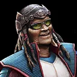
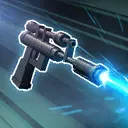
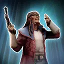
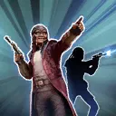
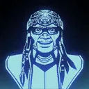
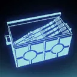

Hondo Ohnaka
The unparalleled Scoundrel willing to play all angles for his own gains

The unparalleled Scoundrel willing to play all angles for his own gains

Deal Special damage to target enemy. Gain 1 stack of Ransom (max 50) for the rest of the encounter, which can't be copied, dispelled, or prevented. If the enemy is Light Side, Hondo removes 10% Turn Meter from them. If the enemy is Dark Side, Hondo gains 10% Turn Meter.
Ransom: +2% Max Health and Tenacity

Remove 20% Turn Meter from all enemies. Hondo gains Outmaneuver for 2 turns, which can't be copied. Inflict Captive on the target enemy (excluding Galactic Legends), which can't be copied, dispelled, evaded, prevented, or resisted, until the start of Hondo's second turn, enemies gain 25 buffs, or Hondo is defeated, and remove it from all other enemies. Whenever Captive expires, Hondo gains 10 stacks of Ransom.
Captive on characters: Speed set to 0, can't bonus attack or gain bonus Turn Meter
Captive on raid bosses: -30% Critical Damage, Defense, and Offense

Dispel all debuffs on all Mercenary and Scoundrel allies. Call target ally to assist, then Hondo assists. If target ally is Light Side they gain 25% damage and Defense Penetration for this attack. If target ally is Dark Side they gain 25% Critical Chance and Critical Damage for this attack. Hondo gains Defense Up for 2 turns and 4% Offense per stack of Ransom for 3 turns.
If Hondo has at least 5 stacks of Ransom, Dark Side enemies are inflicted with Ability Block for 1 turn, which can't be evaded or resisted, and Light Side enemies are inflicted with Buff Immunity for 1 turn, which can't be evaded or resisted. If Hondo has at least 25 stacks of Ransom, increase cooldowns of all enemies by 1.

Hondo has 100% Health Steal. Whenever Hondo evades an attack, he gains a stack of Ransom. If a Captive enemy is defeated and Hondo does not have at least 10 stacks of Ransom, Hondo escapes from battle.
Hondo can't gain more than 5 stacks of Profit.
Hondo gains bonuses based on the amount of stacks of Ransom:
- 5+ Stacks: Add Expose to the target enemy for 1 turn and gain Foresight for 1 turn on his Basic ability
- 10+ Stacks: Immune to critical hits
- 15+ Stacks: Recover 20% Health at the start of his turn
- 20+ Stacks: Recover 20% Protection at the start of his turn
At the start of his turn, if there is an enemy with the Captive debuff, Hondo gains 15% Critical Chance, Critical Damage, and Defense Penetration (stacking, max 150%), and 3 Speed (stacking, max 30) for the rest of the encounter.
Omicron Boost : While in Grand Arenas: Hondo starts the encounter with 25% Turn Meter for each other Mercenary, Scoundrel or Smuggler ally. If there is an enemy with the Captive debuff at the start of Hondo's turn, Hondo gains an additional 15% Critical Chance, Critical Damage, and Defense Penetration per turn (stacking, max 150%) and 3 Speed (stacking, max 30).

The first time any character gains bonus Turn Meter each turn, Hondo gains 5% bonus Turn Meter. Whenever any character gains a buff, Hondo recovers 5% Protection. Whenever any character attacks out of turn, Hondo gains Protection Up (5%, stacking) for 1 turn. If Hondo had at least 2 other allies at the start of the encounter, the first time Hondo has no other active allies, he gains 100% Turn Meter and 25% counter chance, Defense, Evasion, Offense, Potency, and Tenacity for the rest of the encounter.